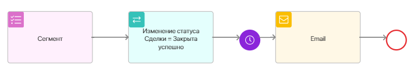
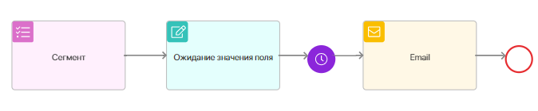
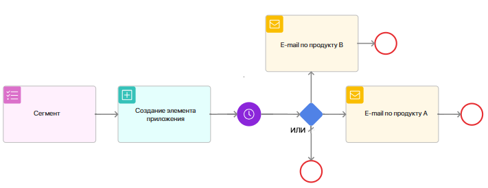
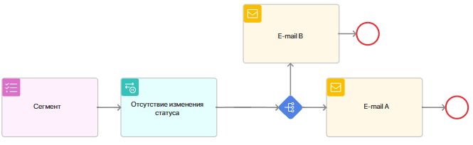

Case 1. Invitation to a webinar
Let’s configure sending a webinar invitation to the subscribers of the selected segment that are specified in the leads. The email is sent to the customer after the status of the lead changes to Processing. We will also set a webinar reminder.
Scenario steps:
- Select a subscriber segment.
- In the Await Status Change trigger, set the change in lead status to Processing.
- In the Await Event block, specify the date when the webinar invitation will be sent.
- In the Email block, configure the sending of the webinar invitation email.
- In the Engagement gateway, specify the Invitation block and enable the Opened the email option. Also set a wait time of five days and a default connector to the end event. If the customer does not open the email within five days, the scenario will end.
- In the Await Event block, specify the date when the reminder will be sent.
- Configure the webinar reminder email to be sent. Only those customers who opened the first email will receive it.
Case 2. Feedback after purchase
Let’s configure sending an email asking for feedback after a deal is closed.
Scenario steps:

- Select a subscriber segment.
- In the Await Status Change trigger, set the change in lead status to Won.
- In the Timer block, specify the waiting period of 14 days.
- In the Email block, set up sending an email with a request to leave a review.
Case 3. Golden customer promotion
Let’s configure an email to be sent to customers when the customer type is changed to Gold. In this case, let’s assume that the Customer Type property is added to the Company app page with Bronze, Silver, and Gold values. The email will be sent to the subscriber specified on the company’s page.

- Select a subscriber segment.
- In the Await Field Value trigger, change the Customer Type property of the Company app item to Gold.
- In the Timer block, specify the waiting period of 1 day.
- In the Email block, configure the sending of an email with a promotion for golden clients.
Case 4. Product newsletters
Let’s set up sending emails to new leads interested in a certain company product.
Scenario steps:

- Select a subscriber segment.
- In the App item created trigger, add a new Leads app item with a subscriber of the segment.
- In the Timer activity, specify a wait period of 1 day.
- In the OR gateway, configure the conditions for each connector:
- If product A is specified on the lead page, the scenario will go to the Email on product A.
- If product B is specified on the lead page, the scenario will go to the Email on product B.
- In any other case, the default connector will be executed and the mailing will not be executed.
- In the Email block, configure the sending of emails on the corresponding company products.
Case 5. A/B Test for an email newsletter
To evaluate two marketing email options, you can set up an email newsletter with a new promotion. Select subscribers who have not been actively contacted in the last week. Using the A/B Test gateway, divide the subscribers into two equal parts, each of which will receive a different version of the email. After executing the scenario, you can view the statistics in the Engagement report.
Scenario steps:

- Select a subscriber segment.
- In the No Status Change trigger, select the Leads app and the Processing status. Then set the No status change period to 7 days.
- In the A/B Test gateway, set the value to 50% for each part of the subscribers.
- In the Email activity, configure different versions of emails to be sent. One half of the subscribers will receive email A and the other half will receive email B.
Found a typo? Select it and press Ctrl+Enter to send us feedback